登月计划：丁丁的乐高月球火箭发射升空
原文标题：Destination Moon: Tintin’s LEGO Moon Rocket Takes Off 作者：Paul Hetherington 来源：BrickNerd 发布日期：2026-04-10
正文翻译
今天的客座文章来自Paul Hetherington，一位来自加拿大温哥华的搭建者和积木艺术家。
登月任务
惊天动地！BrickNerd的Dave怎么在我休息的时候不停地给我发消息？他承诺了一个激动人心的新冒险但拒绝透露任何细节，直到我签了一堆文件。感觉就像在Syldavian安全检查站被ZEPO审讯一样，我跳过各种障碍来完成保密协议。所有官方文件终于就位后，Dave让我看了任务简报：成千上万的牛蛙，乐高要和丁丁历险记一起登月了，以一个全新的LEGO Ideas套装发布！
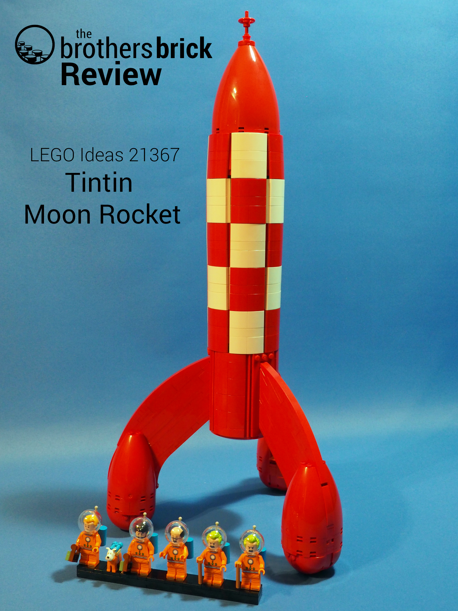
丁丁月球火箭与作者的丁丁收藏品一同展示恰如其分，正当丁丁准备以积木形式重返月球之际，Artemis II也正在完成自己的历史性旅程，提醒我们登月冒险的梦想依然鲜活。那么请加入我登上飞船，近距离检视LEGO Ideas 21367丁丁月球火箭，看看这次积木之旅是否配得上 calculus教授本人。
喜出望外
说我对这个公告欣喜若狂都是轻描淡写。从五岁读到第一本丁丁冒险故事以来，我就一直是丁丁的粉丝，我至今还保留着所有童年时期的丁丁漫画书。我和妈妈仔细收集了当时可获得的每一个故事，多年来随着新版本的发布又增加了关于埃尔热和丁丁世界的参考书。
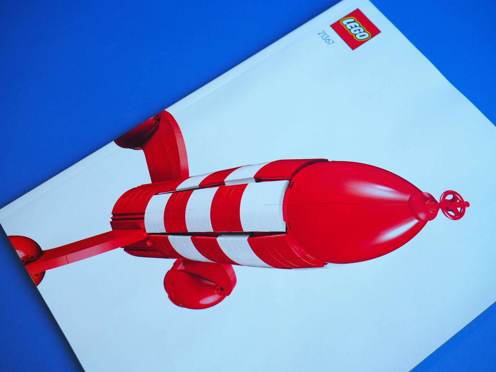
生活在加拿大，在书籍之外体验丁丁的机会有限，这使得30年前参观伦敦丁丁商店的记忆格外难忘。我记得最清晰的是中心展品：一艘巨大的红色和白色火箭模型——这是系列中最持久的图像之一。他们甚至有一个形状像火箭本身的漫画书展示架。多年以后，看到乐高以同样的难忘设计推出官方LEGO Ideas套装，令人无比激动。
超凡的设计合作
雪茄形的月球火箭并不是一个容易用乐高优雅地再现的造型，但这个套装处理得非常出色。由Alexis dos Santos提交的原始LEGO Ideas方案已经是一个很强的概念，包含发射塔架，但LEGO设计师Ellen Bowley将这个草图模型转化为了一个精致而坚固的展示作品，比例出色。就其尺寸而言，这可能是实现近乎无凸粒成品面的最大乐高模型之一，整个1,283片的套装中只有21个可见凸粒。
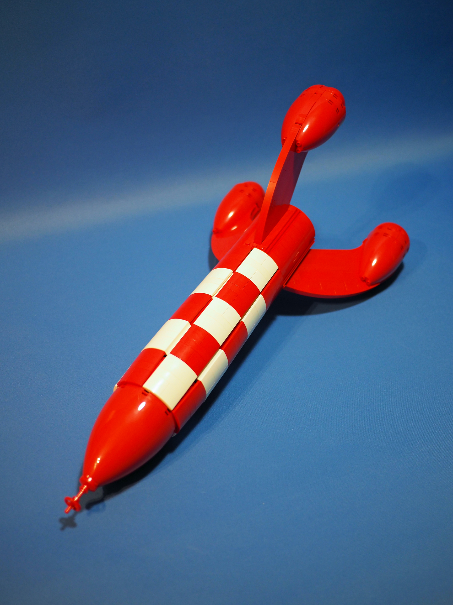
成品火箭——整个1,283片套装仅21个可见凸粒，几乎完全无凸粒化设计内部工程与外观一样令人印象深刻。一个巧妙的Technic连接网络创建了六面体内部框架来支撑火箭的外壳，产生了异常光滑的表面和微妙的锥度，优美地捕捉了复杂的曲线。
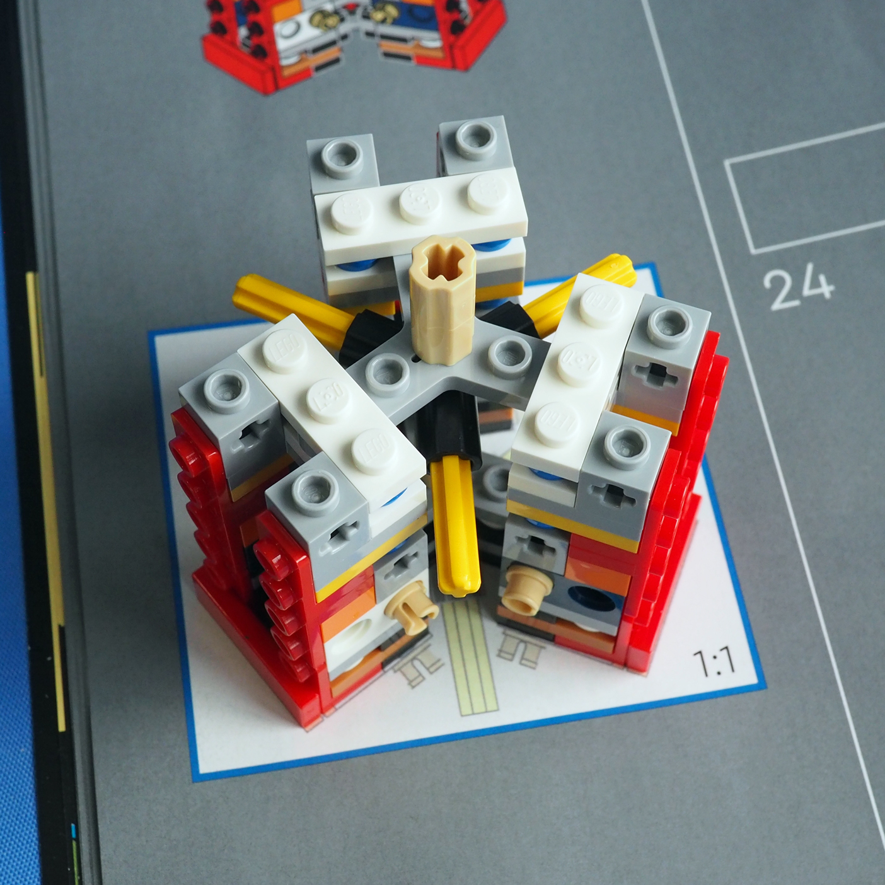
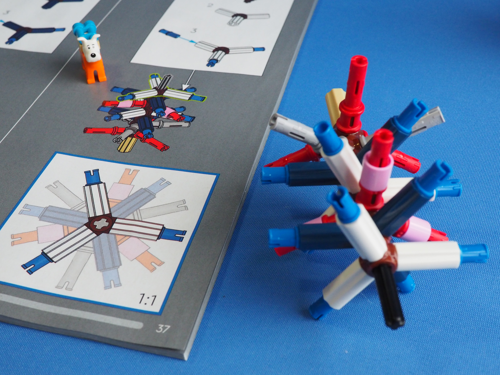
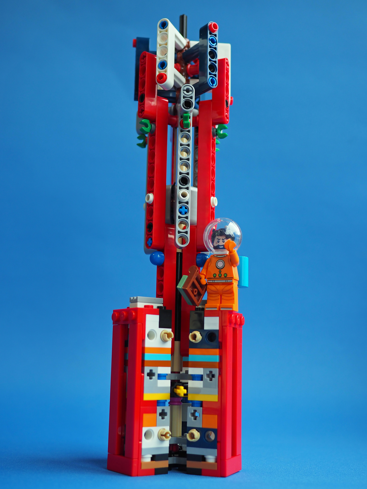
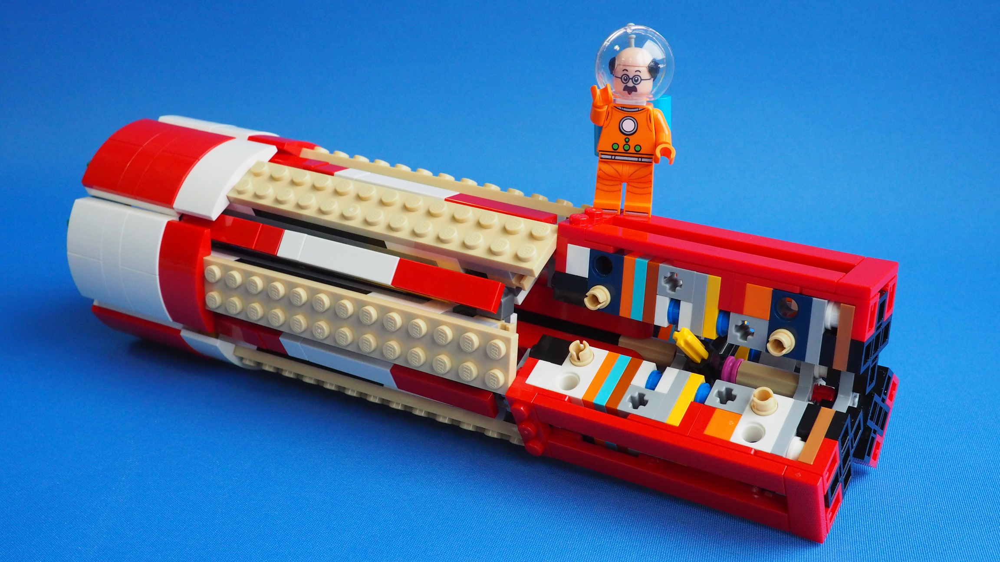
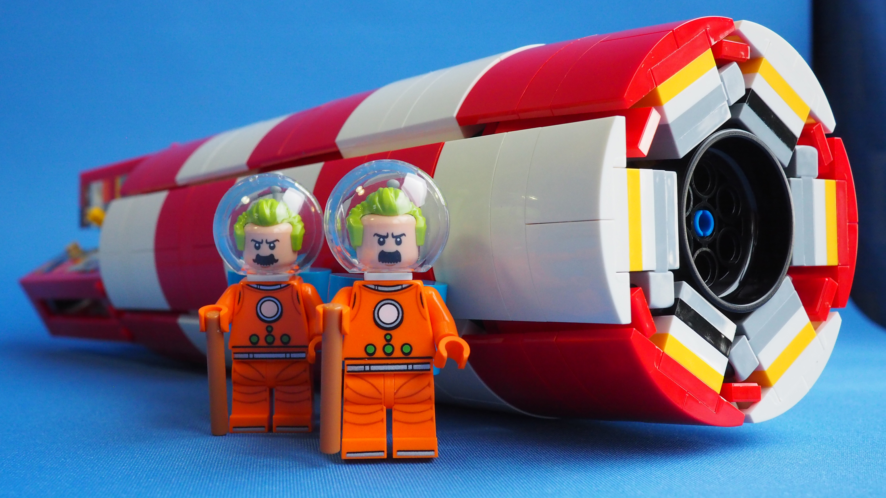
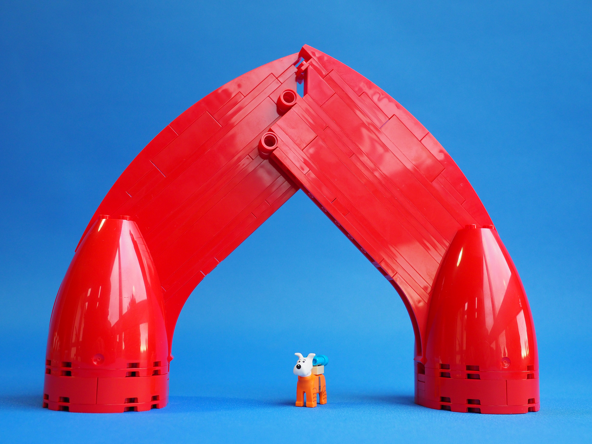
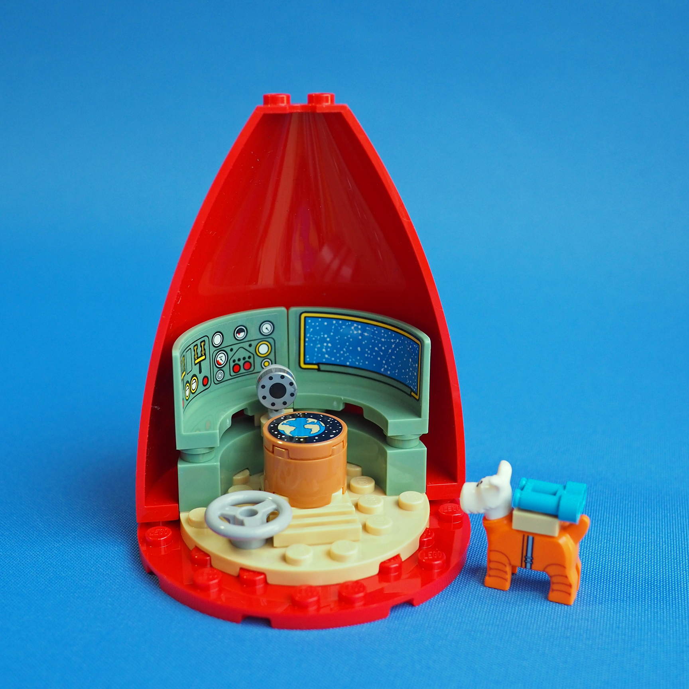
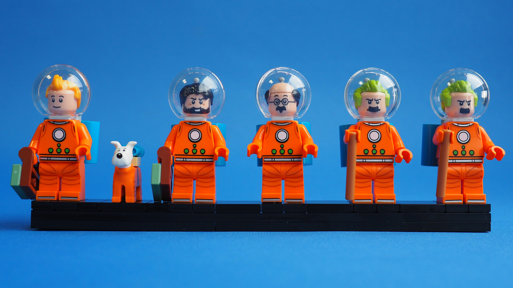
全新的8凸粒宽锥形零件是鼻锥的完美选择，六个匹配的6凸粒宽锥形零件形成稳定支架，赋予整个设计流畅统一的外观。
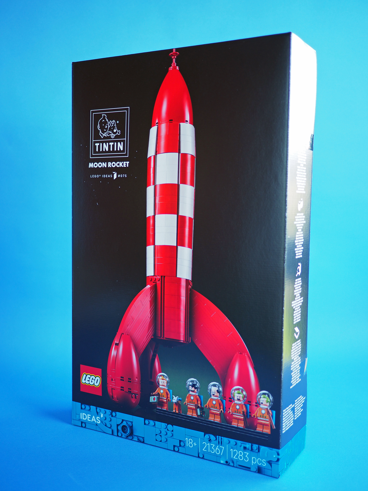
全新8凸粒宽锥形零件作为鼻锥，六个6凸粒宽锥形零件组成着陆支架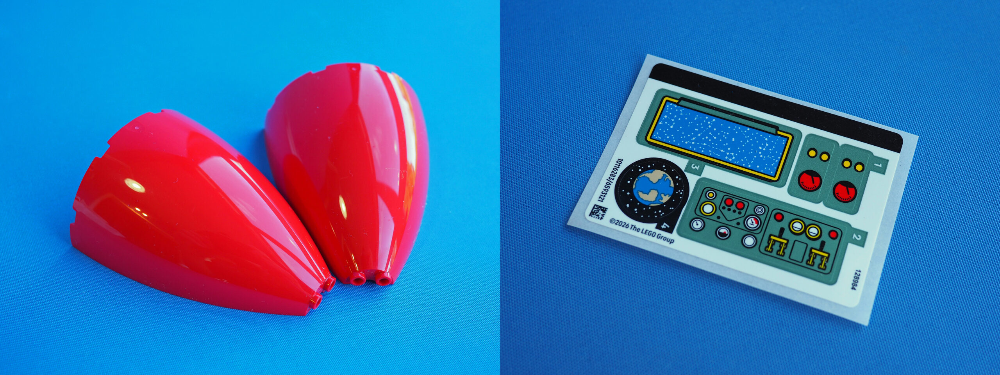
最令人惊喜的是鼻锥内部的内部细节。埃尔热实际上曾委托制作了一个月球火箭的大比例剖面模型，以便准确描绘内部空间，让Bob De Moor在故事展开时精确地绘制每个房间。在这里包含对那些内部细节的致敬是一个贴心的设计，让套装与其源材料之间的联系更加紧密。
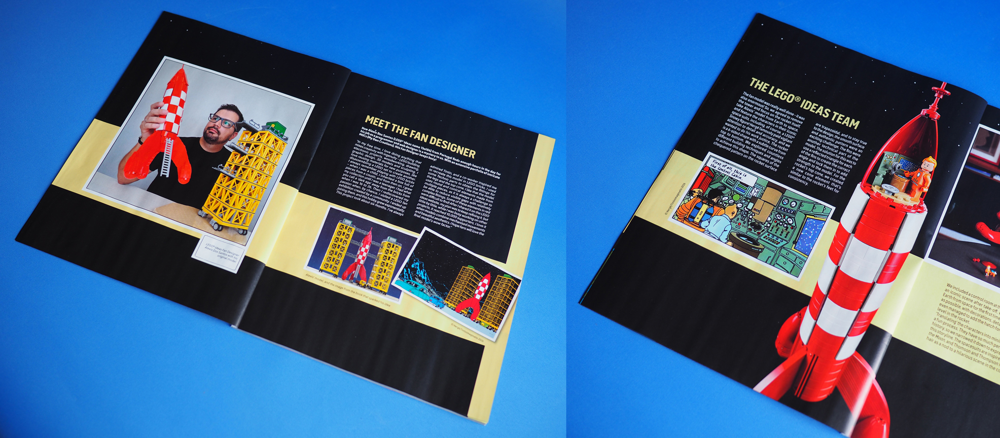
月球上的人仔
以人仔形式加入丁丁角色阵容极其令人兴奋。原始的LEGO Ideas提交只包含火箭和塔架，所以LEGO选择在这里加入角色是一个充满灵感的决定。这也是一个明智的营销决策，因为他们的加入大大增加了套装对收藏家的吸引力。作为其中一位收藏家，我无比感激能看到他们被包含在内。
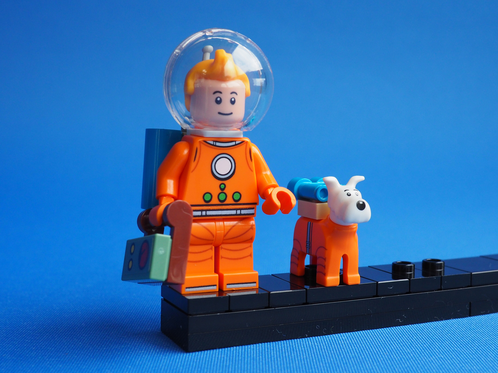
所有角色身穿太空服的版本——与火箭搭配展示效果完美所有角色都身穿太空服与火箭搭配展示完美契合，美丽地捕捉了登月冒险本身的外观。虽然在这个套装中它们堪称完美，但我唯一的批评是每个角色都局限于他们的太空服外观。这使得很难在基于其他23部丁丁冒险的MOC中使用他们。虽然独特的丁丁头部可以搭配现有的乐高躯干和腿部来创建角色的替代版本，但白雪（Snowy）更难改造，因为它永久地被塑造成了太空服形态。目前，搭建者将不得不依赖乐高现有的小型白色狗模具在其他场景中代表它。
此时，我只能发出一个请求：丁丁收藏人仔系列。这个套装是一个美好的开端，但整个丁丁宇宙仍然等待以乐高形式被充实展现。
大开眼界
我接触乐高的时间比接触丁丁还要长，所以看到这两个最喜欢的粉丝文化终于走到一起感觉就像梦想成真。早在这个套装宣布之前，我经常在乐高产品中找到丁丁的影子，即使它们从未是官方合作。
我注意到的最早的类丁丁图像出现在乐高1949年的交通游戏”Monipoli”的封面上。穿过街道的中心人物身后跟着一只小白狗，强烈地让人想起早期丁丁艺术品的外观。另一个例子是乐高1986年出版的漫画《Jim Spaceborn》，其封面设计和布局毫无疑问地受到丁丁冒险的启发，主角与埃尔热著名记者的相似度不止一点半点。


最可辨识的相似之处出现在1998年乐高冒险者系列（Adventurers）的沙漠子主题中。角色Sam Sinister与Sophocles Sarcophagus有相似之处，一些视觉风格也让人联想到《丁丁：法老的雪茄》。多年来，这些微小的回响使得在乐高中发现丁丁的影响变得有趣，这使得乐高本身推出的官方丁丁产品格外令人满意。

目的地：月球
选择月球火箭来代表丁丁宇宙是合乎逻辑的。在系列中很少有比它更即时可辨识的图像，虽然也有其他标志性可能性。《红海鲨鱼》中的鲨鱼潜艇或 Marlinspike Hall 的模型也将会是非常令人满意的套装，也许这次发布将为未来打开大门。祈祷吧。
丁丁受欢迎程度下降的最大挑战可能是时间的流逝。埃尔热在1929年到1981年之间创作了《丁丁历险记》，甚至在他有生之年，许多故事都被部分重写和重绘以保持其时代感。然而，两本月球火箭书籍是保持大部分原始形式的最早冒险之一。
丁丁月球冒险系列漫画封面
1951年和1953年出版时，它们在尼尔-阿姆斯特朗1969年踏上月球近二十年之前就想象了人类太空旅行。在阿波罗11号成功登月后，据说埃尔热给阿姆斯特朗发了一幅画，画中他打开土星五号火箭的门，发现丁丁、哈达克船长和calculus教授在等着欢迎他。
什么让月球火箭特别合适的是，它不仅代表了丁丁最具标志性的载具，也代表了埃尔热最具远见的成就之一。
登月探索者
是什么让这个成就更加非凡的是埃尔热为此做的精心准备。早在1947年，他就开始研究将丁丁送入太空的可能性，决心使科学尽可能准确和可信。历史记录显示，他在设计月球火箭独特的形状和红白棋盘格图案时，从德国V-2火箭中汲取了灵感。在历史的一个奇特转折中，V-2计划背后的首席科学家后来成为美国太空计划的核心人物，帮助使真正的月球任务成为可能。
对于20世纪60年代到80年代成长的孩子们来说，我认为丁丁月球火箭作为太空旅行的可视化想象，与乐高928银河探索者对有抱负的搭建者的影响一样强大。与《星际迷航》和《星球大战》中想象的世界一起，这些故事帮助塑造了几代人关于探索地球之外的梦想。有时候灵感只需向人们展示什么是可能的，很少有虚构火箭比丁丁的更令人难忘地做到了这一点。
冒失之举
正如哈达克船长会说的那样，当我称LEGO Ideas 21367丁丁月球火箭为近年来记忆中我最喜欢的乐高套装之一时，我不认为自己是在冒失。我从五岁起就一直在等待这样的套装，这当然有帮助。对我来说，这次发布感觉像是两个终生热爱的完美交汇点，很难想象乐高有比这更令人满意的方式将丁丁带入积木世界。
无论你计划搭建它、飞行它，还是骄傲地展示它，我都强烈推荐将它添加到你的收藏中，它必将为任何办公室或生活空间带来一抹世纪中叶的冒险精神。
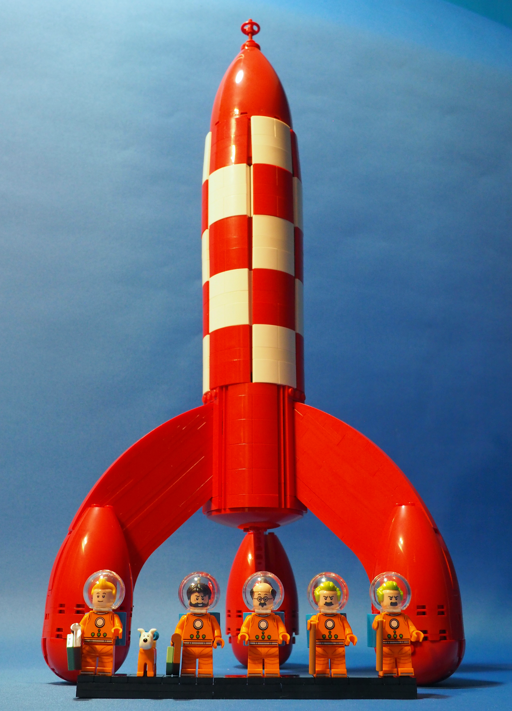
21367丁丁月球火箭最终成品——LEGO Ideas与经典漫画的完美交汇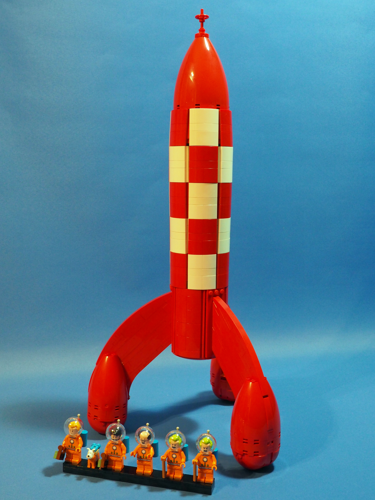
另一角度成品展示——红白棋盘格经典配色与无凸粒化设计的完美结合看到《丁丁历险记》通过这个LEGO Ideas发布触达新受众是一件美好的事情，我希望它能帮助激发兴趣的复兴，特别是在北美。这可能是乐高的一小步，但却是丁丁的一大步。
LEGO Ideas 21367丁丁月球火箭售价约美国210 | 欧洲160欧元 | 英国140英镑 | 澳大利亚$280。
声明：此套装由LEGO提供给BrickNerd。本文中表达的任何观点均为作者本人观点。
相关实体
- 丁丁月球火箭乐高版 - MOC项目实体页